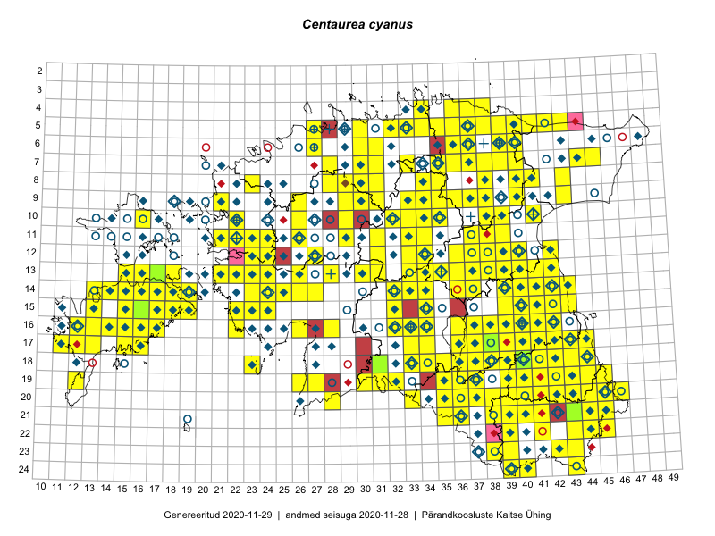

Centaurea cyanus
Uuendatud: 2016-12-02
Kaardile koondatud taksonid: Centaurea cyanus L.

Kaart põhineb 342 vaatlusel. Taksonit on leitud 221 ruudust.
Kuvatud viited 20 esimesele andmebaasikirjele, ülejäänud PlutoFis
- Malle Leht: 2015-07-09: : ala
- Toomas Kukk: 2015-06-23T14:30Z: 21-45: ala
- Toomas Kukk, Eerik Leibak: 2015-08-07: 16-15: GPS punkt
- Toomas Kukk, Eerik Leibak: 2015-08-09: 13-15: ala
- Thea Kull: 2015-07-07: 16-40: ala
- Rein Kalamees: 2015-06-08: 05-32: ala
- Toomas Kukk, Eerik Leibak: 2015-08-09: 14-15: ala
- Toomas Kukk, Eerik Leibak: 2015-08-09: 14-15: GPS punkt
- Ott Luuk, Toivo Sepp: 2015-07-29: 09-31: ala
- Peedu Saar, Ott Luuk: 2015-06-21: 14-41: ala
- Peedu Saar: 2015-07-04: 18-44: ala
- Peedu Saar: 2015-07-15: 15-39: ala
- Ott Luuk, Peedu Saar: 2015-08-13: 24-43: ala
- Peedu Saar, Ott Luuk: 2015-07-27: 10-35: ala
- Peedu Saar, Eerik Leibak: 2015-07-30: 15-42: ala
- Peedu Saar, Eerik Leibak: 2015-07-30: 16-41: ala
- Ott Luuk, Peedu Saar: 2015-08-12: 23-43: ala
- Malle Leht: 2015-07-28: : ala
- Malle Leht: 2015-07-27: 18-40: ala
- Malle Leht: 2015-07-08: : ala